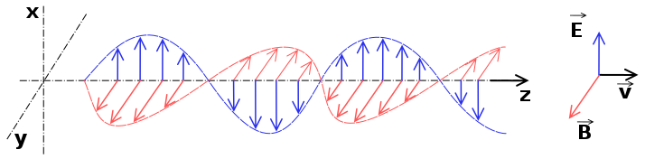
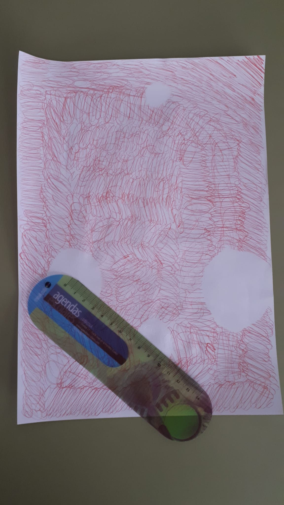
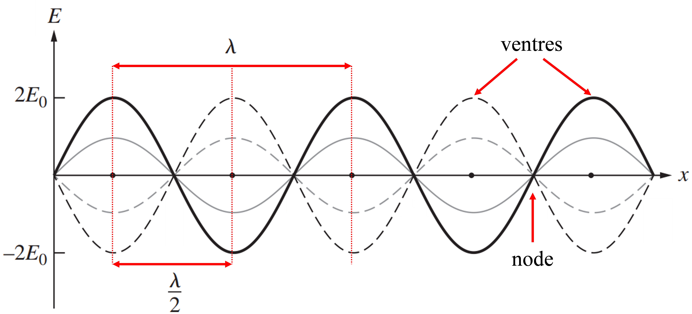
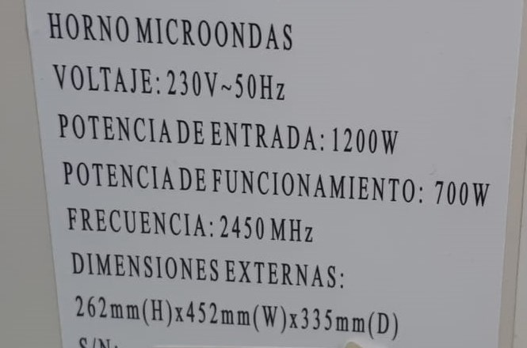

Fonamentació: Principis físics involucrats i la seua relació amb aplicacions tecnològiques
Les ones són un fenomen molt comú en l’univers i es produïxen com a conseqüència d'oscil·lacions i vibracions que donen lloc a una pertorbació que es propaga en l’espai. Les ones electromagnètiques, entre les que es troba la llum, estan formades per un camp elèctric i un altre magnètic variables que oscil·len en plans perpendiculars entre sí i amb la direcció de propagació de l'ona (veure Figura 3), el que fa que puguen propagar-se sense necessitat d’un medi material.
Els valors del camp magnètic (B) i el camp elèctric (E) estan relacionats per la velocitat de la llum (c):
E=c·B

Les microones són ones electromagnètiques amb una freqüència entre 300 i 300.000 MHz4 , o nombre d’oscil·lacions per segon. No només serveixen per escalfar aliments, també s'empren per transmetre senyals telegràfics d'alta velocitat, als radars o per comunicar satèl·lits.
La velocitat de propagació de la llum (c) es una constant física invariable per a qualsevol observador. La seua mesura amb precisió és una qüestió important perquè apareix en moltes equacions físiques i pel seu ús en la definició d’algunes magnituds com el metre, la permitivitat elèctrica o la permeabilitat magnètica. També es important en l’àmbit de les noves tecnologies com en les telecomunicacions via satèl·lit o amb fibra òptica, la medicina amb làser o la informàtica (CD, DVD, o BLU-RAY).Exemples d’equacions físiques que incorporen c a la seua definició serien l’índex de refracció (n=c/v) o la relació entre massa i energia (E=mc2) entre d’altres.
Funcionament i Resultats: observacions i mesures
Una volta tenim preparat el muntatge, tanquem la porta del forn i el deixem funcionar 10 s a màxima potència (700 W en el nostre cas). Transcorregut aquest temps, traiem la fulla ratllada i observem que han aparegut unes taques blanques redones (veure Figura 4).
En la cavitat del microones té lloc una superposició de les ones electromagnètiques que dóna lloc a una configuració anomenada d’ones estacionàries, amb màxims (ventres) i mínims (nodes). La distància entre dos ventres consecutius és igual a la meitat de la longitud de l’onda estacionària (veure Figura 5).
La tinta d’un bolígraf esborrable es torna incolora amb la temperatura, com la d’una planxa, o per la fricció amb la goma que incorporen. Aquest canvi es deu a una reacció irreversible. En el nostre cas, aquestes taques es troben en els punts que han rebut la major part de l’energia calorífica tramesa per les microones, i que coincidix amb la posició dels ventres d’una de les ones estacionàries que es formen en l’interior de l’aparell, independentment de l’eix d’orientació de la fulla.
Com lal ongitud d’ona de les microones d’un forn domèstic és de l’ordre de uns pocs centímetres (λ en la Figura 5), podem mesurar-la amb una regla. En el nostre experiment, la distància entre dos punts consecutius en la fulla de la Figura 4 és de 8,5 cm, pel que la longitud d’ona seria λ = 17 cm (el doble de la mesura anterior). Tenint en compte la freqüència de funcionament de l’aparell, f = 2450 MHz, com s’indica en la pegatina de la part del darrere del forn (Figura 6), calculem la velocitat teòrica de propagació de les microones amb l’equació: v = λ·f
Conclusions
- Utilitzant material assequible que qualsevol pot trobar a casa, hem aconseguit mesurar la velocitat de la llum en l’aire a Tª ambient, amb un resultat de v = 343.000 km/s. Comparat amb el valor actualment acceptat de c = 299.708 km/s, a 0 ºC,3 la nostra mesura té un error relatiu del 17,5%. No hem tingut en compte l’efecte de la pressió atmosfèrica i de la temperatura en la nostra comparació, ja que per les fonts consultades és d’un ordre negligible en comparació amb el nostre error experimental.
- Tot i que és un error elevat, hem de tenir en compte que estem treballant amb mitjans d’ús comú i que és de l’ordre de les primeres mesures per mètodes científics, com el mètode de Roemer (1675) que va calcular un valor aproximat de 220.000 km/s a partir de l’òrbita d’una de les llunes de Júpiter.
- Per altra banda, tot i que aquest resultat no varia per a un mateix aparell, hem observat diferències importants entre uns forns i altres, obtenint mesures de la λ de 14cm (amb resultats de v més pròxims a c) i que podrien justificar-se per freqüències de funcionament dels aparells més baixes que les indicades pel fabricant. És per això que considerem el nostre resultat com a provisional i ens anima a continuar fent proves amb l’objectiu de reduir el nostre error experimental.
Bibliografia
- http://anteriores.cienciaenaccion.org/es/2003/home.html > Experimentos > Medida de la velocidad de la luz con un microondas
- HyperPhysics: http://hyperphysics.phy-astr.gsu.edu/hbasees/hframe.html
- Wikipedia > “Luz”: https://es.wikipedia.org/wiki/Luz
- M. Vollmer, Physics of the microwave oven, Physics Education, Volume 39, Issue 1, pp. 74-81 (2004)
- K. Parker, M. Vollmer, Bad food and good physics: the development of domestic microwave cookery, Physics Education, Volume 39, Issue 1, pp. 82-90 (2004)
- S. Kamol, P. Limsuwan, W. Onreabroy, Three-dimensional standing waves in a microwave oven, American Journal of Physics, Volume 78, Issue 5, pp. 492-495 (2010)